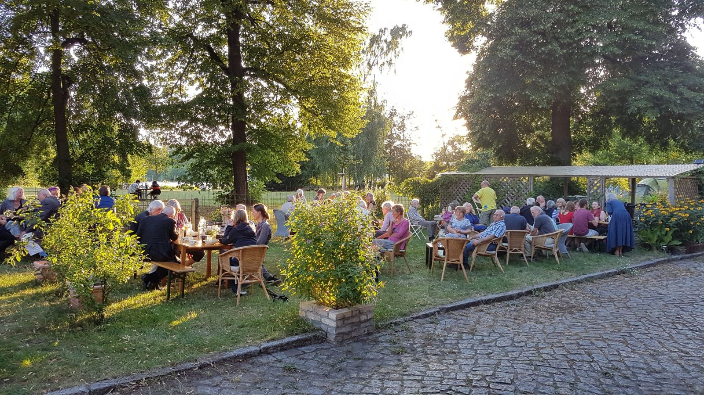
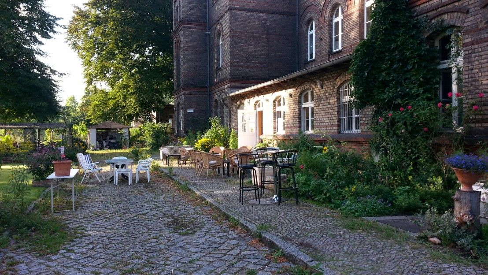
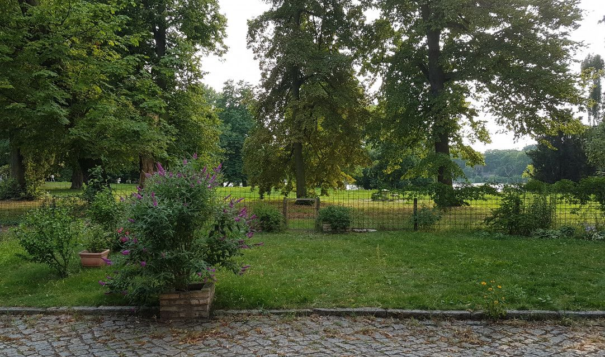

Hochzeiten
Zusammen essen, anstoßen, reden. Gestalten Sie Ihren Hochzeitstag mit dem Salon als gemeinsamem Mittelpunkt und dem Garten für die Zeit dazwischen.
Hochzeiten anfragenFeiern & Feste
Die Menschen, die Ihnen wichtig sind, an einem Tisch. Dazu der Salon, Café und Küche, eine Terrasse und der Garten an der Havel.

So, wie es zu Ihnen passt
Das Café können Sie für Ihr Catering oder zum gemeinsamen Kochen nutzen. Die Gemeinschaftsküche ist zusätzlich buchbar. Von dort geht es direkt auf die Terrasse – das Fest kann drinnen und draußen weitergehen.
Die Kinder können draußen spielen, während die Erwachsenen im Salon oder auf der Terrasse zusammensitzen. Bitte planen Sie die Begleitung der Kinder am Wasser mit ein.

Ihre Gäste. Ihre Ideen.
Zusammen essen, anstoßen, reden. Gestalten Sie Ihren Hochzeitstag mit dem Salon als gemeinsamem Mittelpunkt und dem Garten für die Zeit dazwischen.
Hochzeiten anfragenEin neuer Mensch kündigt sich an. Kommen Sie im vertrauten Kreis zusammen – mit selbst mitgebrachten Lieblingsspeisen und Zeit füreinander.
Babypartys anfragenDrinnen Geburtstag feiern, draußen spielen: Verbinden Sie den Salon mit Terrasse und Garten. Erzählen Sie uns von Alter, Kinderzahl und Ihren Ideen.
Kindergeburtstage anfragenEin runder Geburtstag, ein Jubiläum oder einfach ein Wiedersehen. Im Haus und im Garten findet Ihr Zusammensein seinen eigenen Rhythmus.
Familienfeste & Jubiläen anfragen
Gemeinsam abstimmen
Ihr Fest ist Teil dieses Ortes. Gästezahl, Musik, Zeiten und die Nutzung der Außenbereiche besprechen wir persönlich. Sagen Sie uns, was Sie vorhaben – wir sagen Ihnen ehrlich, was geht.
Schreiben Sie uns von Ihrer Feier und Ihrem Wunschtermin.